Durtlang Hills
Scenic viewpoint overlooking Aizawl
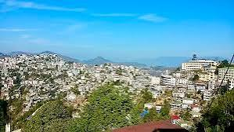
Scenic viewpoint overlooking Aizawl
Exhibits on Mizo culture, history, and artifacts
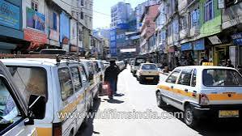
Popular market for local handicrafts and produce
Largest church in Mizoram
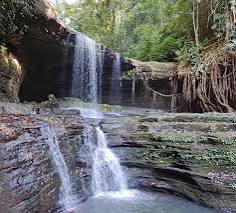
Scenic waterfall near Lunglei town
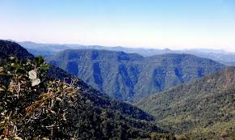
Biodiversity hotspot with diverse flora and fauna
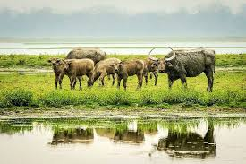
Wildlife sanctuary known for rich biodiversity
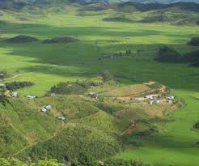
Birdwatching and trekking opportunities
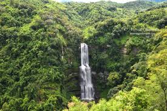
Highest waterfall in Mizoram
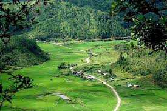
Scenic hill offering panoramic views
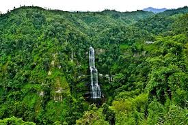
Peak offering trekking and panoramic views of the surrounding hills

Replica of traditional Mizo village showcasing culture and lifestyle
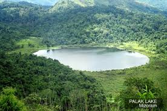
Largest lake in Mizoram, popular for boating and fishing
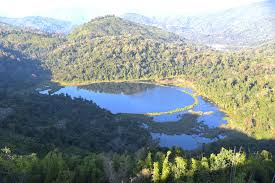
Hilltop offering views of the surroundings

Highest peak in Mizoram, known for orchids and rhododendrons
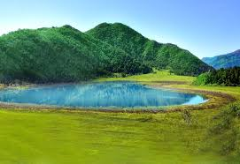
Natural lake near Aizawl, ideal for picnics and boating
Cultural village showcasing traditional Mizo life
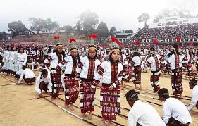
Annual harvest festival celebrating Mizo culture with dance and music

Another important Mizo festival marking post-harvest thanksgiving
Opportunities in various hills and forests
Many sanctuaries and parks offer excellent birdwatching opportunities